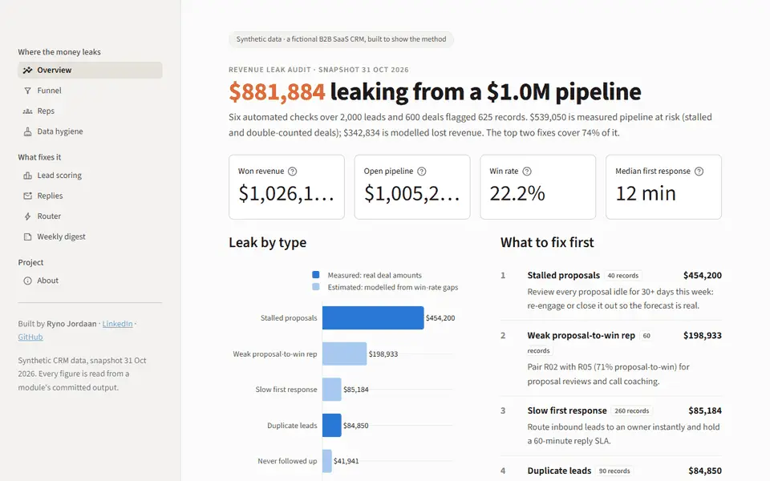

Flagship · Python, pandas, Claude API, Streamlit
Revenue Leak Engine
I built a fake CRM with six revenue leaks planted at known counts, then the tools a sales team would use to find and fix them: hygiene checks, lead scoring, an AI reply classifier, a lead router and a weekly brief.
$881,884found leaking from $1.0M
625/625bad records, 0 false positives
USD 0.14to classify 1,500 replies, 99.6% right
All data is synthetic. The live dashboard can take a few seconds to wake up.
